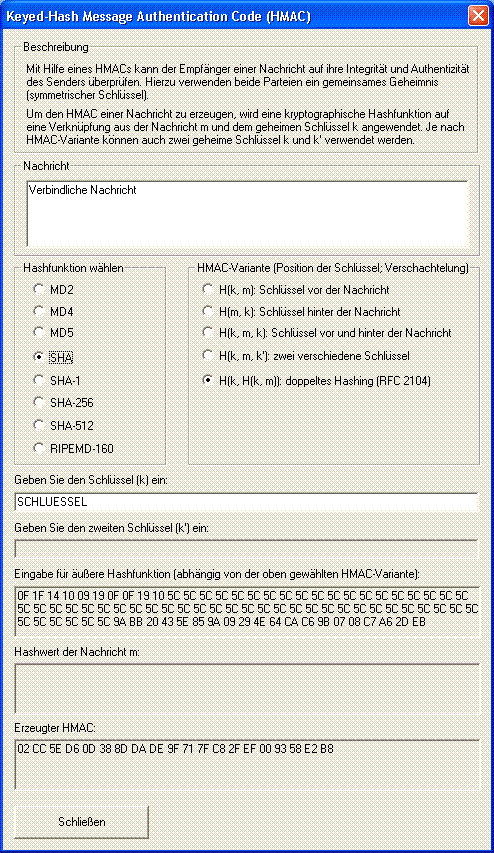

Diesen Dialog erreichen Sie über das Menü Einzelverfahren \ Hashverfahren \ Generieren von HMACs.

In diesem Dialog können Sie den Keyed-Hash Message Authentication Code (HMAC) einer geöffneten Textdatei erstellen. Der erstellte HMAC wird Ihnen hexadezimal angezeigt.
Zur Auswahl stehen die Hashfunktionen MD2, MD4, MD5, SHA, SHA-1, SHA-256, SHA-512 und RIPEMD-160.
In CrypTool sind fünf HMAC-Varianten implementiert (H = Hash-Funktion, k = Schlüssel, m = Nachricht):
Der für die Erstellung des HMAC benötigte geheime Schlüssel kann über das Eingabefeld festgelegt werden. Zusätzlich kann eine von fünf Formen der Verknüpfung (HMAC-Variante) von Datei und Schlüssel gewählt werden. Die Variable m bezeichnet dabei die Nachricht, k den Schlüssel und H die Hashfunktion.
Die erste HMAC-Variante bezeichnet man als "Secret Prefix Method", die zweite als "Secret Suffix Method". Die dritte und die vierte Verknüpfung bezeichnet man als "Envelope Method" mit einem beziehungsweise zwei Schlüsseln. Nur Variante fünf ist in einem Standard (RFC 2104, FIPS PUB 198) spezifiziert. Dieser HMAC berechnet sich wie folgt: H ( k XOR opad, H(k XOR ipad, m) ) mit ipad = 64 Bytes je 0x36, opad = 64 Bytes je 0x5C. Falls der Schlüssel k länger als die Blocklänge der Hash-Funktion ist, wird k durch H(k) ersetzt. [Siehe Menezes, van Oorschot, Vanstone: Handbook of Applied Cryptography]
Alle hier benutzte Hash-Funktionen sind mit Hilfe von OpenSSL implementiert.
Bemerkung:
Bitte beachten Sie, dass diese Demonstration nur für Textdateien zur Verfügung steht und dass die Dateilänge auf 16.000 Zeichen begrenzt ist. Zeichen, die darüber hinausgehen, fließen nicht in den HMAC ein.